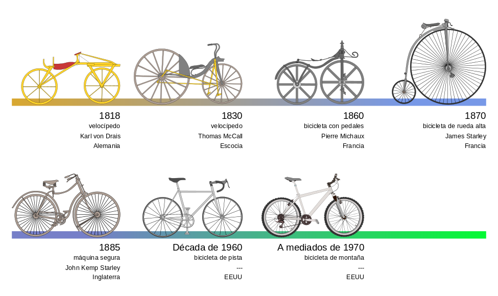

LOS PRINCIPIOS DE LA BICICLETA
Hasta la segunda mitad del siglo xx, se aceptó que el primer antecedente de la bicicleta era el celerífero inventado en 1790 por el conde francés Mede de Sivrac, el cual consistía en un listón de madera terminado en una cabeza de animal montado sobre dos ruedas.Era propulsado por una persona sentada, impulsándose con sus propios pies.
En 1817, el barón alemán Karl Christian inventó el primer vehículo de dos ruedas, al que llamó máquina andante, precursora de la bicicleta y la motocicleta. Esta máquina consistía en una especie de carrito de dos ruedas, colocadas una detrás de otra, y un manillar. La persona se mantenía sentada sobre una pequeña montura, colocada en el centro de un pequeño marco de madera. Para moverse, empujaba alternativamente con el pie izquierdo y el derecho hacia adelante.Este invento estaba basado en la idea de que una persona, al caminar, desperdicia mucha fuerza por tener que desplazar su peso en forma alternada de un pie al otro. Drais logró crear este sencillo vehículo que le permitió al hombre evitar ese trabajo.
LA BICICLETA DE PEDALES
la primera bicicleta con pedales se atribuye al escocés Kirkpatrick Macmillan, en el año 1839. Macmillan nunca patentó el invento, que posteriormente fue copiado en 1846 por Gavin Dalzell de Lesmahagow, quien lo difundió tan ampliamente que fue considerado durante cincuenta años el inventor de la bicicleta. 